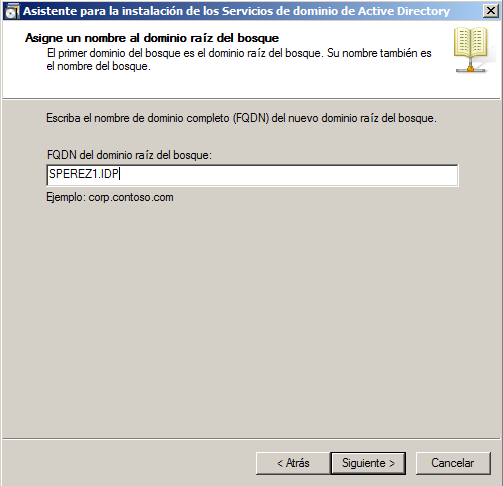
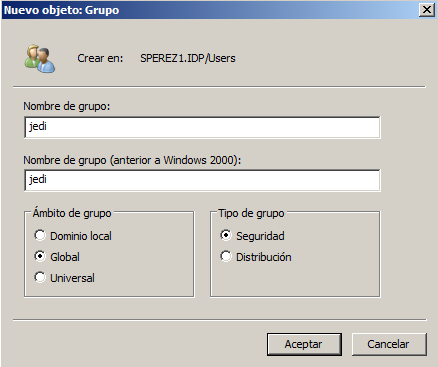
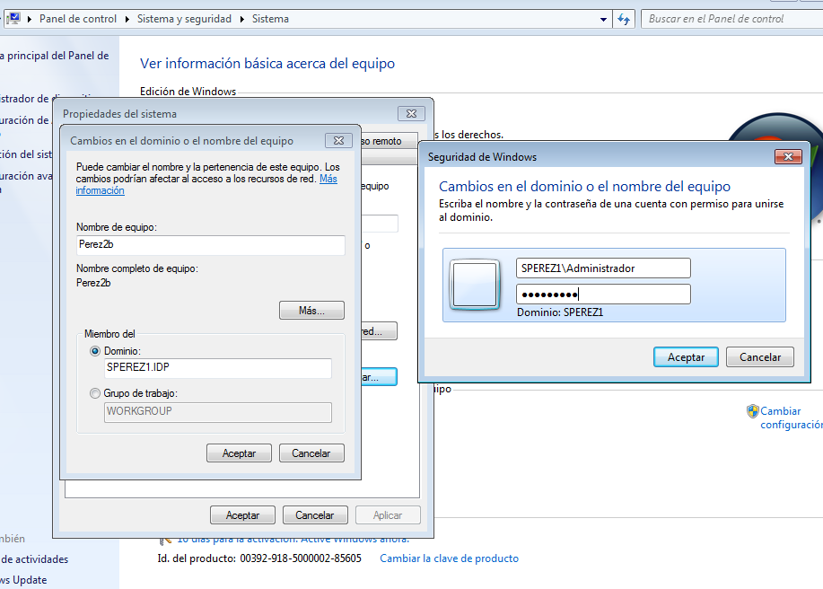
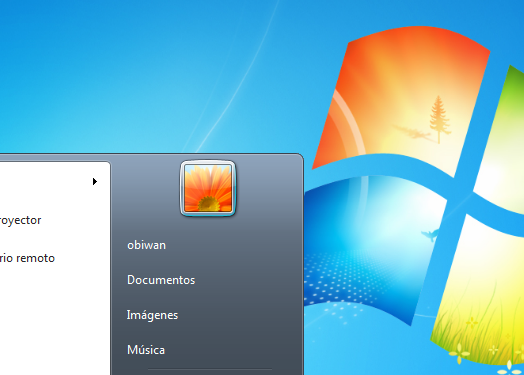
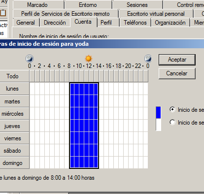

- Módulo: Sistemas Operativos
- Título del trabajo PDC WinServer
- Componentes del grupo: Silvano Pérez Yanes
- Curso Académico: 2013/2014
- Fecha de entrega: 24 de Abril de 2014
Para la configuración del Windows 2008 server le agregamos un nombre de dominio y activar las funciones del controlador de dominio.
Ahora, creamos los usuarios de dominio con el active directory, y creamos los usuarios "obiwan, yoda, quigon, maul, vader, emperador" y los grupos de los usuarios de dominio "jedi, sith".
A continuación, instalamos una maquina virtual windows 7 enterprise y luego clonamos esa maquina virtual con una direción MAC diferentes, las maquinas virtuales tendrán de nombres "PEREZ2A y PEREZ2B", con los que los usuarios de dominio podrán acceder, teniendo las MVs conectadas al dominio del servidor.

Ahora, agregamos un disco virtual nuevo a las maquinas virtuales windows 7 donde estarán las carpetas de los ususarios de dominio. entramos con todos los usuarios de dominio en las maquinas virtuales de windows 7, comprobaremos que se han creado las carpetas de los usuarios al entrar, ya que se le han asignado una carpeta compartida. Una vez finalizado todo esto nos vamos a las propiedades de sistema y borramos los perfiles moviles almacenados.

Para finalizar, le asignamos a los usuarios un horario con los que porder entrar a las maquinas virtuales.
